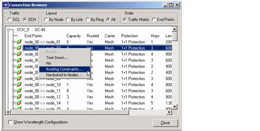
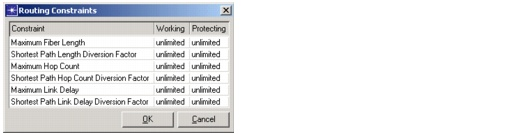

Routing > Constraint-Based Routing
Constraint-Based Routing
You might want to control the route used by a connection during a routing or dimensioning action. You can do this by setting additional constraints in the Connection Browser. These defined constraints affect the following design operations:
- Routing and dimensioning actions—if SP Guru Transport Planner cannot find a route that meets the routing constraints, it does not set up a connection.
- Optimized routing and dimensioning—SP Guru Transport Planner reroutes connections during the optimization process only if the constraints are satisfied.
Grooming and Ring Dimensioning actions are not affected by these constraints, because these actions do not always set up a connection in one step.
If multiple constraints are defined for a connection, the connection is set up only if all constraints are met. If constraints are set for both working and protection paths, but the constraints can be satisfied for one path only, the connection will not bet set up.
To specify constraints for a connection, open the Connection Browser (Network > Connection Browser), then right-click on the connection of interest and choose Routing Constraints. This opens the Routing Constraints dialog box (Figure 6-12-Routing Constraints Dialog Box ). You can set routing constraints for one connection or for multiple connections (by selecting multiple objects in the browser).
Figure 6-11 Specifying Constraints for a Connection

Figure 6-12 Routing Constraints Dialog Box

| Home © 1987-2007 OPNET Technologies, Inc. All Rights Reserved. This software may be covered by one or more U.S. Patents. See complete patent notice in the Legal Notices section. OPNET Support Center |